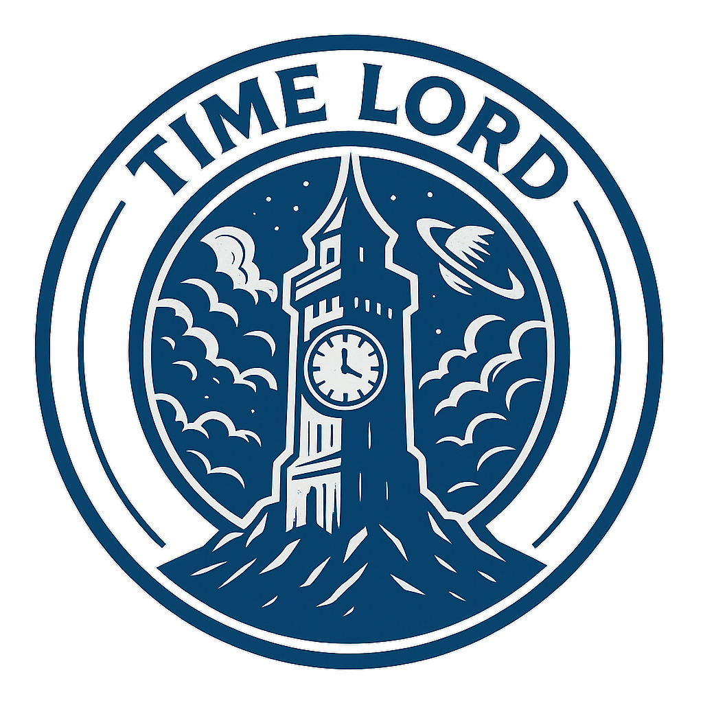

INITIATE STARSHIP HMI
LOADING CORE...

FLIGHT CONTROL
00:00:00
VOICE:
OFFLINE
POWER CORE STATUS
HAND TRACKING
INITIALIZING...
SYSTEM DIAGNOSTICS
ONLINE
CPU
NET
EXTERNAL SENSORS
--°
STANDBY
EXIT
GEOSPATIAL FEED
NOVELLA WEB INTERFACE
GO
FLIGHT CALENDAR - DEC 2025
SUN
MON
TUE
WED
THU
FRI
SAT
MISSION REMINDERS
No scheduled reminders.
ADD MANUALLY
ADD NEW TIMED REMINDER
ATMOS MUSIC PLAYER
Pulsar Rendezvous
Cygnus X-1
[Waiting for track data...]
单句重读
单词重读
停止/重播
PLAYLIST:
1
TRACKS
Use the buttons below to add tracks.
导入文件/文件夹
SYSTEM LOG (Nova Log)
[SYS] READY.
CALENDAR
REMINDER
MUSIC
RADAR
SYSTEM LOG
[SYS] READY.
CALENDAR
REMINDER
MUSIC
RADAR